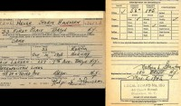

Helmer Hansen
M, #72576, f. 20 juni 1865
Biografi
Helmer Hansen ble født den 20 juni 1865 på/i Leka, Nord-Trøndelag. Han giftet seg med
Mathilde.
| Sist redigert |
4 desember 2013 00:00:00 |
Mathilde
K, #72577, f. 6 juli 1869
Biografi
Mathilde ble født den 6 juli 1869 på/i Leka, Nord-Trøndelag. Hun giftet seg med
Helmer Hansen.
Mathilde was also known as Mathilde Hansen.
| Sist redigert |
4 desember 2013 00:00:00 |
Bjørn Hammer
M, #72578, f. 27 juni 1941, d. 23 juni 2014
Foreldre
Biografi
Bjørn Hammer ble født den 27 juni 1941 på/i Otterøy, Namsos, Nord-Trøndelag. Han døde den 23 juni 2014 på/i Namsos helsehus, Namsos, Nord-Trøndelag. Han ble gravlagt den 2 juli 2014 på/i Otterøy kirkegård, Namsos, Nord-Trøndelag.
| Sist redigert |
25 juni 2014 00:00:00 |
| Slektskap | 7-menning 2 ganger forskjøvet til Håkon Wahl |
Sigrun Helene Hammer
K, #72579, f. 17 mai 1943, d. 15 januar 2020
Foreldre
Familie: Bjarne Ingolf Valen (f. 23 juli 1937, d. 13 oktober 2013)
| Datter | Rigmor Valen (f. 30 mars 1968) |
| Datter | Inger Helen Valen (f. 4 oktober 1971) |
| Sønn | Arne Sigurd Valen (f. 13 januar 1980) |
Biografi
Sigrun Helene Hammer ble født den 17 mai 1943 på/i Otterøy, Namsos, Nord-Trøndelag. Hun giftet seg med
Bjarne Ingolf Valen den 23 juni 1962. Hun døde den 15 januar 2020 på/i Nærøysund, Trøndelag. Hun ble gravlagt den 21 februar 2020 på/i Gravvik kirkegård, Nærøysund, Trøndelag.
Sigrun Helene Hammer was also known as Sigrun Helene Valen. Hun ble konfirmert i 1957 på/i Otterøy kirke, Namsos, Nord-Trøndelag. Hun bodde på/i Naustbukta, Nærøy, Nord-Trøndelag.
| Sist redigert |
18 februar 2020 00:00:00 |
| Slektskap | 7-menning 2 ganger forskjøvet til Håkon Wahl |
Jens Hansen
M, #72581, f. 3 november 1867, d. 10 mai 1945
Foreldre
Biografi
Jens Hansen ble født den 3 november 1867 på/i Vikna, Nord-Trøndelag. Han giftet seg med
Oldine Marie Halset. Han døde den 10 mai 1945. Han ble gravlagt den 19 mai 1945 på/i Valøy kirkegård, Vikna, Nord-Trøndelag.
Jens Hansen bodde på/i Alfheim 10/32, Rørvik, Vikna, Nord-Trøndelag.
| Sist redigert |
24 august 2024 13:07:03 |
| Slektskap | 5-menning 4 ganger forskjøvet til Håkon Wahl |
Hansine Hansdatter
K, #72582, f. 1870
Foreldre
Biografi
Hansine Hansdatter ble født i 1870 på/i Vikna, Nord-Trøndelag. Hun giftet seg med
Kristian Nordøyan.
Hansine Hansdatter was also known as Hansine Nordøyan.
| Sist redigert |
5 desember 2013 00:00:00 |
| Slektskap | 5-menning 4 ganger forskjøvet til Håkon Wahl |
Oldine Hansdatter
K, #72583, f. 10 mai 1875, d. 29 november 1955
Foreldre
Biografi
Oldine Hansdatter ble født den 10 mai 1875 på/i Vikna, Nord-Trøndelag. Hun giftet seg med
Oskar Halvdan Binnerøy. Hun døde den 29 november 1955. Hun ble gravlagt den 5 desember 1955 på/i Valøy kirkegård, Vikna, Nord-Trøndelag.
Oldine Hansdatter was also known as Oldine Binnerøy.
| Sist redigert |
5 desember 2013 00:00:00 |
| Slektskap | 5-menning 4 ganger forskjøvet til Håkon Wahl |
Johanna Torbergsdatter Kjønsøy
K, #72584, f. 17 mai 1869
Foreldre
Biografi
Johanna Torbergsdatter Kjønsøy ble født u.e. den 17 mai 1869 på/i Vikna, Nord-Trøndelag. Hun giftet seg med
Jørgen Gedenius Hansen.
Johanna Torbergsdatter Kjønsøy was also known as Johanna Hansen.
| Sist redigert |
21 januar 2026 00:11:23 |
Hjørdis Oline Hansen
K, #72585, f. 31 desember 1916, d. 1 juli 2002
Foreldre
Biografi
Hjørdis Oline Hansen ble født den 31 desember 1916 på/i Vikna, Nord-Trøndelag. Hun giftet seg med
Charly Leander Nilsen Fjukstad. Hun døde den 1 juli 2002. Hun ble gravlagt den 5 juli 2002 på/i Valøy kirkegård, Vikna, Nord-Trøndelag.
Hjørdis Oline Hansen was also known as Hjørdis Oline Fjukstad. Hun ble døpt den 3 juni 1917 på/i Vikna, Nord-Trøndelag.
| Sist redigert |
24 august 2017 00:00:00 |
| Slektskap | 6-menning 3 ganger forskjøvet til Håkon Wahl |
Charly Leander Nilsen Fjukstad
M, #72586, f. 23 oktober 1909, d. 11 februar 1987
Foreldre
Biografi
Charly Leander Nilsen Fjukstad ble født den 23 oktober 1909 på/i Vikna, Nord-Trøndelag. Han giftet seg med
Hjørdis Oline Hansen. Han døde den 11 februar 1987 på/i Vikna, Nord-Trøndelag. Han ble gravlagt den 17 februar 1987 på/i Valøy kirkegård, Vikna, Nord-Trøndelag.
| Sist redigert |
10 juni 2018 00:00:00 |
Oldine Marie Halset
K, #72587, f. 15 oktober 1876, d. 19 juni 1956
Foreldre
Familie: Jens Hansen (f. 3 november 1867, d. 10 mai 1945)
Biografi
Oldine Marie Halset ble født den 15 oktober 1876 på/i Vikna, Nord-Trøndelag. Hun giftet seg med
Jens Hansen. Hun døde den 19 juni 1956 på/i Vikna, Nord-Trøndelag. Hun ble gravlagt på/i Valøy kirkegård, Vikna, Nord-Trøndelag.
Oldine Marie Halset was also known as Oldine Marie Hansen. Hun ble døpt den 19 november 1876 på/i Garstad kirke, Vikna, Nord-Trøndelag. Hun ble bisatt den 25 juni 1956 Valøy kirke, Vikna, Nord-Trøndelag.
| Sist redigert |
5 desember 2013 00:00:00 |
Aslaug Hansen
K, #72588, f. 24 april 1899, d. 1951
Foreldre
Biografi
Aslaug Hansen ble født den 24 april 1899 på/i Rørvik, Vikna, Nord-Trøndelag. Hun giftet seg med
Johan Birger Svendsen den 2 juli 1925 på/i Nidarosdomen, Trondheim, Sør-Trøndelag. Hun døde i 1951 på/i Haugesund, Rogaland. Hun ble gravlagt den 14 april 1951 på/i Vår Frelser gravlund, Haugesund, Rogaland.
Aslaug Hansen was also known as Aslaug Svendsen. Hun ble døpt den 6 august 1899 på/i Rørvik kapell, Vikna, Nord-Trøndelag. Hun bodde på/i Trondheim, Sør-Trøndelag.
| Sist redigert |
9 januar 2018 00:00:00 |
| Slektskap | 6-menning 3 ganger forskjøvet til Håkon Wahl |
Gudrun Hansen
K, #72589, f. 10 februar 1905, d. 28 januar 1986
Foreldre
Biografi
Gudrun Hansen ble født den 10 februar 1905 på/i Rørvik, Vikna, Nord-Trøndelag. Hun giftet seg med
Torleif Helgesen den 30 mars 1935 på/i Hauge menighet, Oslo. Hun døde den 28 januar 1986 på/i Oslo. Hun ble gravlagt den 20 mai 1986 på/i Vestre gravlund, Oslo.
Gudrun Hansen ble døpt den 27 august 1905 på/i Vikna, Nord-Trøndelag. Hun ble konfirmert den 13 juli 1919 på/i Rørvik kapell, Vikna, Nord-Trøndelag.
| Sist redigert |
24 august 2024 13:28:34 |
| Slektskap | 6-menning 3 ganger forskjøvet til Håkon Wahl |
Helge Storm Hansen
M, #72590, f. 28 oktober 1908
Foreldre

Helge Storm Hansen
Biografi
Helge Storm Hansen ble født den 28 oktober 1908 på/i Vikna, Nord-Trøndelag.
Helge Storm Hansen ble døpt den 31 mai 1909 på/i Rørvik kirke, Vikna, Nord-Trøndelag. Han ble konfirmert den 17 juni 1923 på/i Rørvik kirke, Vikna, Nord-Trøndelag. Han bodde den 5 mars 1942 på/i Brooklyn, Kings, New York, USA.
| Sist redigert |
24 august 2024 14:33:54 |
| Slektskap | 6-menning 3 ganger forskjøvet til Håkon Wahl |
Kristian Nordøyan
M, #72591, f. omtrent 1870
Biografi
| Sist redigert |
5 desember 2013 00:00:00 |
Oskar Halvdan Binnerøy
M, #72592, f. 22 april 1877, d. 7 mars 1950
Foreldre
Biografi
Oskar Halvdan Binnerøy ble født den 22 april 1877. Han giftet seg med
Oldine Hansdatter. Han døde den 7 mars 1950. Han ble gravlagt den 15 mars 1950 på/i Valøy kirkegård, Vikna, Nord-Trøndelag.
Oskar Halvdan Binnerøy was also known as Halfdan Oskar Binnerøy. Han bodde på/i Binnerøy, Vikna, Nord-Trøndelag.
| Sist redigert |
5 desember 2013 00:00:00 |
Anton Løkke Johannesen Opdal
M, #72593, f. 6 september 1843, d. 3 november 1923
Foreldre
Biografi
Anton Løkke Johannesen Opdal ble født den 6 september 1843 på/i Svolvær, Vågan, Nordland. Han giftet seg med
Anna Margrethe Jensdatter Ristad den 1 mars 1868 på/i Skage kirke, Overhalla, Nord-Trøndelag. Han døde den 3 november 1923 på/i Reinbjør gamlehjem, Skage, Overhalla, Nord-Trøndelag. Han ble gravlagt den 11 november 1923 på/i Skage kirkegård, Overhalla, Nord-Trøndelag.
Anton Løkke Johannesen Opdal drev tømmerhugst på akkord i Van Severens skovbrug i Harran. Husmand med jord Opdalsmoen, Overhalla, Nord-Trøndelag.
| Sist redigert |
18 juli 2022 00:40:28 |
Anna Margrethe Jensdatter Ristad
K, #72594, f. 29 februar 1844, d. 26 april 1913
Foreldre
Biografi
Anna Margrethe Jensdatter Ristad ble født u.e. den 29 februar 1844 på/i Skage, Overhalla, Nord-Trøndelag. Hun giftet seg med
Anton Løkke Johannesen Opdal den 1 mars 1868 på/i Skage kirke, Overhalla, Nord-Trøndelag. Hun døde den 26 april 1913 på/i Overhalla, Nord-Trøndelag. Hun ble gravlagt den 4 mai 1913 på/i Skage kirkegård, Overhalla, Nord-Trøndelag.
Anna Margrethe Jensdatter Ristad was also known as Anna Margrethe Opdal.
| Sist redigert |
26 desember 2025 00:23:18 |
Johannes Johnsen Reinbjør
M, #72595, f. 1802, d. 31 mai 1844
Biografi
Johannes Johnsen Reinbjør ble født i 1802. Han giftet seg med
Lovise Pedersdatter Okstadaunet. Han døde den 31 mai 1844 på/i Svolvær, Nordland. Johannes forulykket på sjøen.
| Sist redigert |
16 juli 2022 19:48:44 |
Jens Christian Pedersen Opdal
M, #72596, f. før 1824
Biografi
Jens Christian Pedersen Opdal ble født før 1824.
| Sist redigert |
6 desember 2013 00:00:00 |
Peternella Mathiasdatter Ristad
K, #72597, f. før 1824
Biografi
Peternella Mathiasdatter Ristad ble født før 1824.
| Sist redigert |
6 desember 2013 00:00:00 |
Ole Olsen Finvolden
M, #72598, f. 1874
Biografi
Ole Olsen Finvolden ble født i 1874 på/i Namsskogan, Nord-Trøndelag.
| Sist redigert |
6 desember 2013 00:00:00 |
Karen Cesilie Greger
K, #72599, f. 23 mars 1862
Biografi
Karen Cesilie Greger ble født den 23 mars 1862 på/i Steinkjer, Nord-Trøndelag.
Karen Cesilie Greger flyttet til Overhalla, Nord-Trøndelag, i 1885.
| Sist redigert |
18 januar 2026 23:02:40 |
{kind=link}